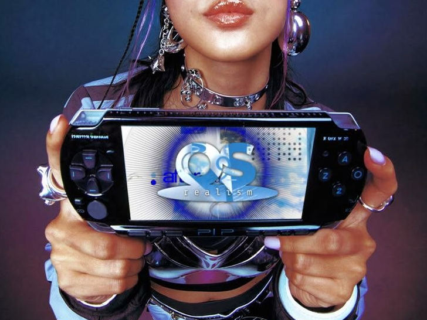
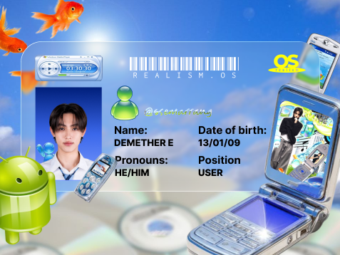

WELCOME TO MY SPACE

(taruh foto utama di sini)
Welcome to my little corner of REALISM.OS. I’m Demether, and this page is where I share what drew me in, how I understand the concept, and the visual details that caught my eye.
I wanted to make this page feel like my own: a little retro-computer nostalgia, a little Y2K energy, and my own words instead of a copy of the official website.
A little corner of my own
About Me — Demether

(taruh foto lu di sini)
I'm Demether Estue.
A creative soul who likes exploring ideas, visuals, and the little details that make a concept feel alive.
Hi, I'm Demether Estue. I enjoy exploring creative things and turning ideas into something that feels personal. I'm here because REALISM caught my attention, and I wanted to be part of a space with a concept I could explore in my own way.
I'm not here to pretend I know everything. I want to learn, take part, and bring my own perspective into the experience.
My purpose is to enjoy the process, meet new people, and contribute through my own ideas and creativity. I want to make the most of this experience while staying true to myself.
My understanding of REALISM
From what I understand, REALISM uses the idea of an operating system to shape its own digital world and identity. The terms OS and Users fit into that idea, while Orbit Signals is part of the wider concept around it.
To me, the computer-inspired idea makes REALISM feel like more than just a visual theme. It gives the project its own way of presenting identity, connection, and participation. That's my understanding of the concept, in my own words.
Concept & Visual Identity
A DIGITAL WORLD WITH A RETRO-FUTURE FEEL
What stands out to me about REALISM is the way it builds an identity around a computer-system concept. Instead of treating the interface as decoration alone, the idea of a system gives the world its own language: there are OS, Users, and a wider network called Orbit Signals.
I see it as a mix of digital identity and world-building, where the computer-inspired framework helps connect the different parts into one concept.
These are the visual elements I associate with the direction. The way I use them here is my own interpretation, not a claim that every detail is an official brand rule.
Soft sky blue
The website's XP blue, silver, and Y2K accents are my design choices for this page. They are not presented as the complete official REALISM palette.
I like that the concept can feel nostalgic without looking stuck in the past. The old-computer references bring the familiarity, while the sharper colors, layered interface, and digital details give it a more futuristic mood.
For my own page, I wanted to keep that retro-computer feeling but make the writing and layout feel like me, rather than copying the official site section by section.